|
Shahed Ahmed
I am a PhD student in Electrical and Computer Engineering at Purdue University, advised by
Prof. Joseph Makin. I work on machine
learning for brain–computer interfaces, building models that decode and synthesize speech
from intracranial neural recordings. My work combines conditional generative models (flow
matching, normalizing flows, and posterior sampling with generative speech priors) with
multi-channel neural signal processing.
Before Purdue, I completed my undergraduate and master's degrees in
Electrical and Electronic Engineering (EEE), BUET in 2021
and 2023, where I worked on machine learning for biosignals (EEG, PPG, ECG), microphone-array
sound localization, and medical imaging. I also taught signal processing and machine learning
at BUET as a lecturer for three years.
I am looking for research internships for summer 2027 in machine learning
and generative modeling, especially their applications to brain–machine and neuromotor
interfaces.
Outside of work, I like to travel, read books, and play chess.
Email /
CV /
Google Scholar /
GitHub /
LinkedIn
|
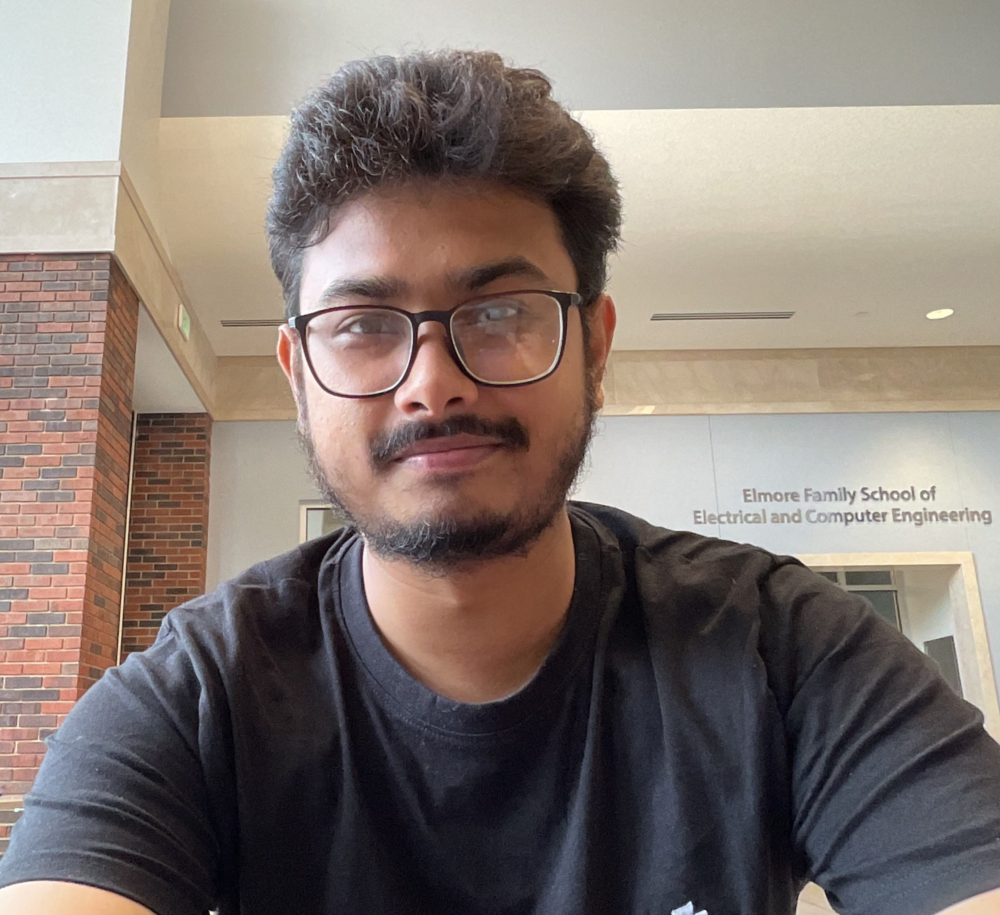
|
News
- Oct 2026: Reviewed my first paper for the Journal of Neural Engineering.
- Jan 2026: Selected for the UC Berkeley–Purdue Engineering GradBridge Program.
- Aug 2024: Started my PhD at Purdue University.
- Dec 2023: Twin-SegNet accepted in Computer Vision and Image Understanding.
- Sep 2023: Defended my master's thesis.
|
|
Research Projects
Speech brain–computer interfaces at the Makin Lab, Purdue University.
|
|
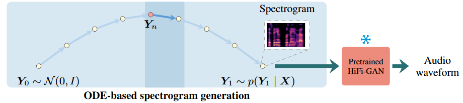
|
Conditional generative models for neural speech synthesis
Explored conditional generative approaches for synthesizing speech from neural recordings,
including both discrete and continuous normalizing flows. Achieved state-of-the-art results
on our in-house sEEG dataset and on a public microelectrode array dataset.
|
|
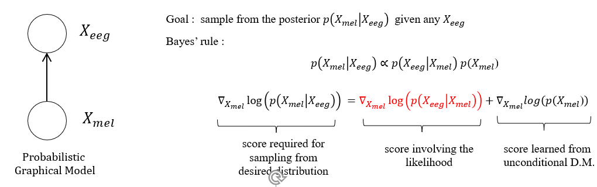
|
Posterior sampling for speech synthesis
Formulated neural speech synthesis as a Bayesian inverse problem and performed posterior
sampling with a generative speech prior for more legible speech generation.
|
|
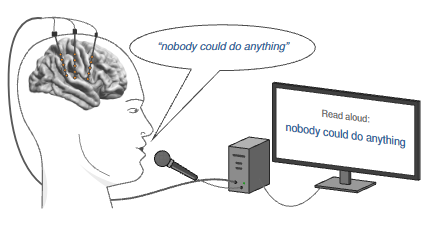
|
Role of auditory cortex in continuous speech decoding from stereoEEG
Manuscript in preparation for Nature Communications
Led preprocessing of a multi-channel stereoEEG speech dataset from two study participants and
analyzed the role of auditory cortex in overt and covert speech.
|
|
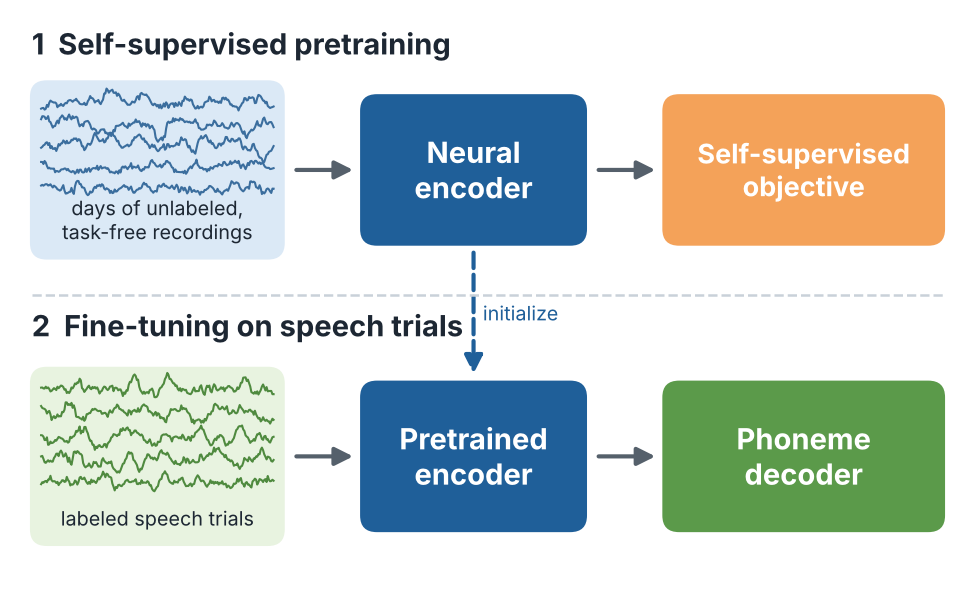
|
Unsupervised pretraining for speech decoding
Performed unsupervised pretraining of speech decoders with self-supervised approaches on days of
unlabeled, task-free neural recordings, improving phoneme decoding accuracy by at least 5
percentage points.
|
|
Publications
Representative papers are highlighted. See
Google Scholar for a full list.
|
|
|
Synthesizing speech from intracranial recordings with conditional flow matching
Shahed Ahmed, Bilal Ahmed, Andrew Romeo,
Joseph G. Makin
Under review at ICLR, 2027
A conditional flow matching model that synthesizes speech from intracranial recordings,
reducing character error rate from 48% to 34% (a 14 percentage point improvement).
|
|
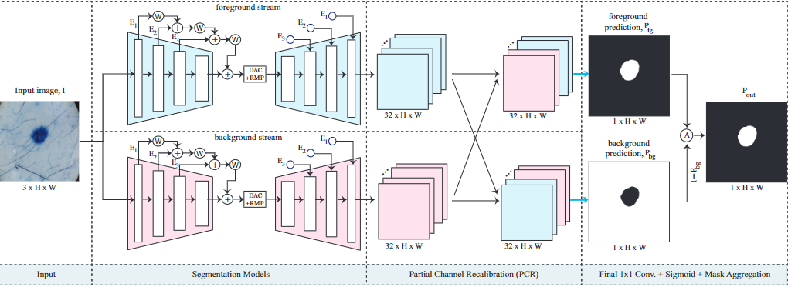
|
Twin-SegNet: Dynamically coupled complementary segmentation networks for generalized medical image segmentation
Shahed Ahmed,
Md. Kamrul Hasan
Computer Vision and Image Understanding, 2024
A dual-stream segmentation model that segments both foreground and background tissue and
unifies them through dynamic partial channel recalibration.
|
|
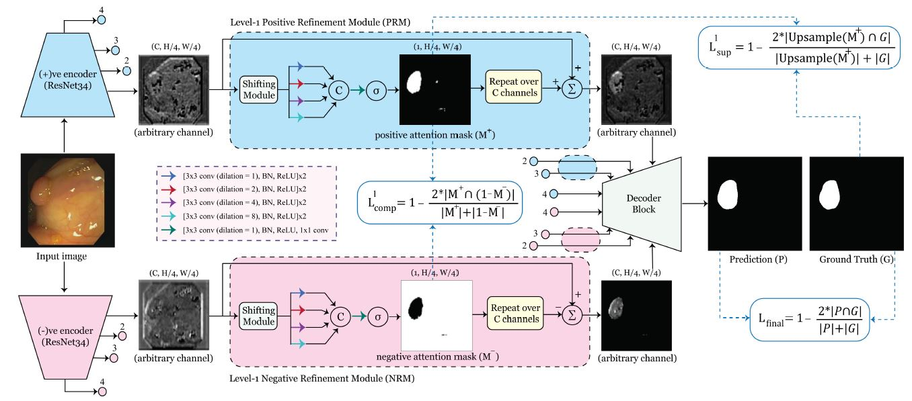
|
COMA-Net: Towards generalized medical image segmentation using complementary attention guided bipolar refinement modules
Shahed Ahmed,
Md. Kamrul Hasan
Biomedical Signal Processing and Control, 2023
Strengthening foreground tissue relative to background in feature space improves generalized
medical image segmentation.
|
|
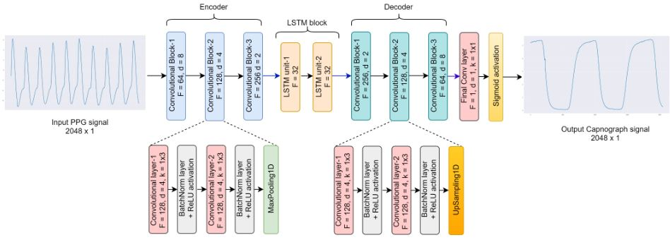
|
CapNet: A deep learning-based framework for estimation of capnograph signal from PPG
Shahed Ahmed, Md. Tariqul Islam, Soumav Biswas, Rayhan Hayther Samrat, Tafhimul Islam Akash, Arik Subhana,
Celia Shahnaz
EMBC, 2022 (oral presentation)
A CNN–RNN architecture that maps PPG signals to the corresponding capnograph waveform.
|
|
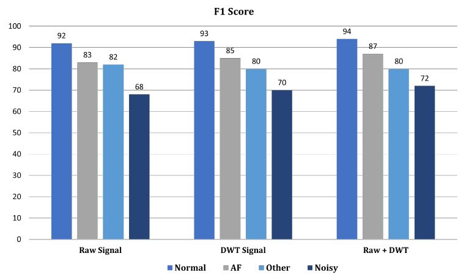
|
A deep learning scheme for detecting atrial fibrillation based on fusion of raw and discrete wavelet transformed ECG features
Md Awsafur Rahman, Shahed Ahmed,
Shaikh Anowarul Fattah
EMBC, 2022
Combining discrete wavelet transform features with the raw ECG signal improves atrial
fibrillation classification.
|
|
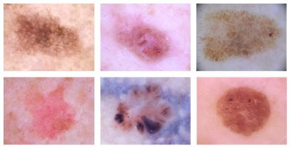
|
S2C-DeLeNet: A parameter transfer based segmentation-classification integration for detecting skin cancer lesions from dermoscopic images
Jahin Alam, Mir Sayeed Mohammad, Md Adnan Faisal Hossain, Ishtiaque Ahmed Showmik, Munshi Sanowar Raihan,
Shahed Ahmed, Talha Ibn Mahmud
Computers in Biology and Medicine, 2022
A framework that unifies classification and segmentation for skin lesion analysis.
|
|
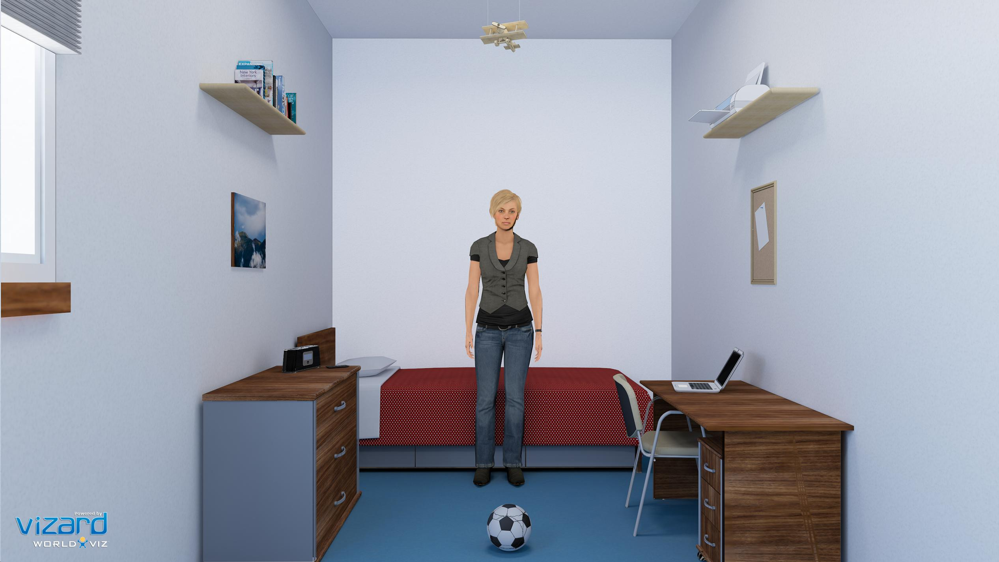
|
An approach for analyzing cognitive behavior of autism spectrum disorder using P300 BCI data
Nabila Tasnim, Joyita Halder, Shahed Ahmed,
Shaikh Anowarul Fattah
IEEE Region 10 Symposium (TENSYMP), 2022
Analysis of EEG recordings from the BCIAUT-P300 dataset of participants with autism spectrum
disorder undergoing BCI-based rehabilitation.
|
|
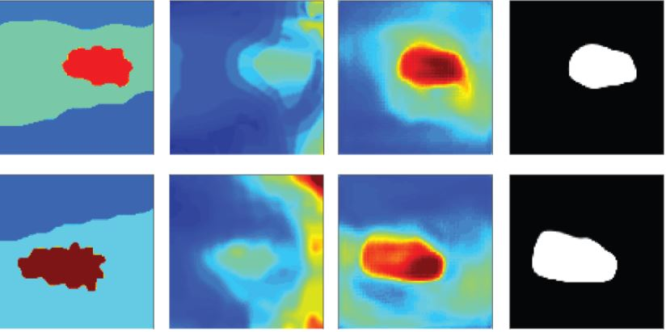
|
DSWE-Net: A deep learning approach for shear wave elastography and lesion segmentation using single push acoustic radiation force
Shahed Ahmed, Uday Kamal,
Md. Kamrul Hasan
Ultrasonics, 2021
The first deep learning approach to produce shear wave elastography images from scatterer
motion induced by a single acoustic radiation force push.
|
Last updated November 2026. Website adapted from here.
|